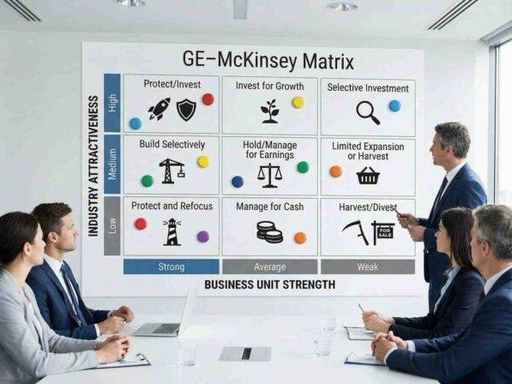

麦肯锡九宫格
基本信息
全称GE-McKinsey 九格矩阵，俗称麦肯锡九宫格，1970 年代麦肯锡为通用电气（GE）打造的业务组合 / 市场投资分析工具，用来弥补 BCG 矩阵（仅市场增速 + 市占率两个单一指标）过于简单的缺陷。
核心用途：对集团多条业务线、产品线、细分市场做标准化评估，判断资源该加码、维持还是撤出，是市场战略、资源分配最经典框架之一。
核心定义
GE麦肯锡九宫格标准图核心逻辑（双维度 3×3 九宫格）
纵轴 Y：行业吸引力（外部市场环境），分「高 / 中 / 低」
横轴 X：业务竞争实力（企业自身优势），分「强 / 中 / 弱」 两两组合形成 9 个格子，每个格子对应一套市场战略。

各维度详细解析
两大评估维度（市场分析核心打分指标）
1. 纵轴：行业吸引力（看市场好不好）多指标加权打分，衡量赛道长期盈利潜力：市场规模、年增长率、行业平均利润率竞争激烈程度、进入 / 退出壁垒政策监管、技术迭代空间、周期性、上下游议价能力 得分越高 = 赛道越优质，值得布局。
2. 横轴：业务竞争实力（看你在市场强不强）评估自身在该赛道的相对优势：市场份额、品牌影响力、渠道覆盖成本优势、研发 / 产品力、毛利率、客户粘性管理团队、供应链、专利壁垒 得分越高 = 企业在该市场话语权越强。
9 个格子分区 + 市场战略（分三大区域）
第一区：优先投资增长区（右上角 3 格，绿色）高吸引力 + 强实力（右上最优） 市场前景好、自身龙头地位战略：全力加码、扩产能、加大营销研发、并购抢占份额，核心现金牛增长业务。高吸引力 + 中等实力（右中） 赛道优质，但竞争力一般战略：重点补强短板（渠道 / 产品），选择性大额投入，追赶头部。中等吸引力 + 强实力（中上） 市场增速一般，但企业垄断地位战略：守住份额、优化盈利，适度投资提升现金流。
第二区：选择性维持 / 谨慎投入（对角线 3 格，黄色）高吸引力 + 弱实力（左上） 赛道很好，但企业无竞争力战略：不单独硬投，寻求合资、收购竞品；无合作机会则放弃该细分市场。中等吸引力 + 中等实力（正中） 市场平平、自身不上不下战略：选择性投入，砍掉低效产品线，只保留高毛利细分，不扩张。低吸引力 + 强实力（右下） 赛道萎缩，但你是行业龙头战略：收割现金流，少新增投入，择机高价出售业务。
第三区：收缩收割 / 退出区（左下角 3 格，红色）中等吸引力 + 弱实力（左中） 市场一般、自身无优势战略：缩减预算，只维持基础运营，逐步收缩市场范围。低吸引力 + 中等实力（中下） 行业下行，竞争力普通战略：榨取短期现金，停止一切新增投资。低吸引力 + 弱实力（左下最差） 赛道衰退 + 企业毫无优势战略：快速剥离、关停、出售业务，及时撤出该市场。
和 BCG 矩阵（波士顿矩阵）核心区别（市场分析对比）
维度 | 麦肯锡九宫格 | BCG 四象限矩阵 |
网格 | 3×3 九格，分层更细 | 2×2 四格，划分粗糙 |
评估指标 | 多指标加权综合打分 | 仅单一指标：市场增速、相对市占率 |
适用场景 | 多元化集团、多产品线、复杂细分市场分析 | 单一品类、快速粗略筛查 |
优势 | 兼顾外部市场 + 内部实力，决策更客观 | 简单易上手，适合初步快速盘点 |
短板 | 需要大量市场数据、打分工作量大 | 忽略政策、成本、竞争格局等关键变量 |
市场分析典型应用场景
- 集团多业务赛道评估：判断旗下各板块市场优先级，分配年度营销、研发预算；
- 多产品线优化：快消 / 电子企业评估各产品细分市场表现，淘汰弱势 SKU；
- 新市场拓展决策：评估待进入细分赛道吸引力 + 自身匹配度，决定是否入局；
- 并购 / 资产剥离研判：判断标的业务所处九宫格位置，测算投资回报；
- 年度战略复盘：统一管理层对各市场的判断，避免资源平均主义。
实操落地步骤（市场分析标准流程）
- 拆分所有业务 / 细分市场单元；
- 分别制定「行业吸引力」「竞争实力」打分表，设置指标权重；
- 收集行业数据、企业经营数据，逐项打分并加权算出总分；
- 将每个业务单元标注在九宫格内（可用气泡图，气泡大小代表营收规模）；
- 按格子分区制定对应市场策略，重新分配公司资源。
补充区分：两种 “九宫格” 不要混淆
- GE - 麦肯锡业务九宫格：市场 / 业务战略分析，维度 = 行业吸引力 + 竞争力；
- 人才九格矩阵：人力资源工具，维度 = 员工绩效 + 潜力，和市场分析无关。
附件1：九宫格示例
| 麦肯锡九宫格评分标准总表 | |||||
| 横轴：业务竞争实力（企业自身优势） | |||||
| 强 | 中 | 弱 | 评分区间说明 | ||
| 纵轴：行业吸引力（外部市场环境） | 高 | 【评分标准】 1. 行业吸引力评分≥80分（高） 2. 业务竞争实力评分≥80分（强） 3. 核心匹配度：赛道优质+自身龙头地位，完全匹配核心发展方向 【战略定位】优先投资增长区，核心现金牛业务 | 【评分标准】 1. 行业吸引力评分≥80分（高） 2. 业务竞争实力评分60-79分（中） 3. 核心匹配度：赛道优质，但自身竞争力不足，存在明显短板 【战略定位】谨慎维持区，选择性投入补强短板 | 【评分标准】 1. 行业吸引力评分≥80分（高） 2. 业务竞争实力评分<60分（弱） 3. 核心匹配度：赛道优质，但自身无核心竞争力，无法匹配赛道要求 【战略定位】收缩退出区，不单独硬投，寻求合作或放弃 | 高：≥80分 中：60-79分 低：<60分 |
| 中 | 【评分标准】 1. 行业吸引力评分60-79分（中） 2. 业务竞争实力评分≥80分（强） 3. 核心匹配度：市场增速一般，但自身垄断地位，现金流稳定 【战略定位】谨慎维持区，守住份额，优化盈利，适度投资 | 【评分标准】 1. 行业吸引力评分60-79分（中） 2. 业务竞争实力评分60-79分（中） 3. 核心匹配度：市场平平，自身不上不下，无明显优势也无致命短板 【战略定位】谨慎维持区，选择性投入，砍掉低效产品线，不扩张 | 【评分标准】 1. 行业吸引力评分60-79分（中） 2. 业务竞争实力评分<60分（弱） 3. 核心匹配度：市场一般，自身无优势，无法形成有效竞争力 【战略定位】收缩退出区，缩减预算，逐步收缩市场范围 | ||
| 低 | 【评分标准】 1. 行业吸引力评分<60分（低） 2. 业务竞争实力评分≥80分（强） 3. 核心匹配度：赛道萎缩，但自身是行业龙头，仍有稳定现金流 【战略定位】收缩退出区，收割现金流，停止新增投入，择机出售 | 【评分标准】 1. 行业吸引力评分<60分（低） 2. 业务竞争实力评分60-79分（中） 3. 核心匹配度：行业下行，自身竞争力普通，无法扭转行业趋势 【战略定位】收缩退出区，榨取短期现金，停止一切新增投资 | 【评分标准】 1. 行业吸引力评分<60分（低） 2. 业务竞争实力评分<60分（弱） 3. 核心匹配度：赛道衰退+企业毫无优势，完全无发展前景 【战略定位】收缩退出区，快速剥离、关停、出售业务，及时撤出 | ||
附件2：评分标准
| 麦肯锡九宫格核心维度打分细则 | ||||
| 一、纵轴：行业吸引力（外部市场环境）打分细则 | ||||
| 打分维度 | 建议权重 | 高评分标准（80-100分） | 中评分标准（60-79分） | 低评分标准（<60分） |
| 市场规模与增长 | 20% | 市场规模大，年复合增长率≥15%，处于快速成长期 | 市场规模中等，年复合增长率5%-14%，处于稳定成熟期 | 市场规模小，年复合增长率<5%，处于衰退期 |
| 行业盈利水平 | 20% | 行业平均毛利率≥30%，净利润率≥15%，盈利空间大 | 行业平均毛利率15%-29%，净利润率5%-14%，盈利空间中等 | 行业平均毛利率<15%，净利润率<5%，盈利空间极低，甚至全行业亏损 |
| 竞争格局 | 15% | 行业集中度高，CR5≥60%，竞争格局清晰，无恶性价格战 | 行业集中度中等，CR5 30%-59%，竞争激烈但有序，有一定价格战 | 行业集中度极低，CR5<30%，完全竞争，恶性价格战频发 |
| 进入壁垒 | 15% | 进入壁垒极高，需专利、资质、资金、渠道等多重门槛，新玩家难以进入 | 进入壁垒中等，有一定的资金、资质要求，新玩家进入有一定难度 | 进入壁垒极低，无明显门槛，新玩家可随意进入 |
| 政策与监管环境 | 10% | 政策大力支持，监管环境稳定，无重大政策风险 | 政策中性，监管环境基本稳定，无重大政策变动 | 政策严格限制，监管风险高，存在重大政策不确定性 |
| 技术迭代与周期性 | 10% | 技术迭代速度慢，行业周期性弱，需求稳定 | 技术迭代速度中等，行业有一定周期性，需求波动可控 | 技术迭代速度极快，行业强周期性，需求波动极大，存在技术颠覆风险 |
| 上下游议价能力 | 10% | 对上下游议价能力强，可轻松传导成本压力，账期健康 | 对上下游议价能力中等，成本传导有一定压力，账期基本可控 | 对上下游议价能力极弱，成本无法传导，账期极差，现金流压力大 |
| 二、横轴：业务竞争实力（企业自身优势）打分细则 | ||||
| 打分维度 | 建议权重 | 强评分标准（80-100分） | 中评分标准（60-79分） | 弱评分标准（<60分） |
| 市场份额与行业地位 | 20% | 市场份额行业前3，绝对龙头地位，品牌影响力极强 | 市场份额行业前10，有一定品牌影响力，行业地位稳定 | 市场份额行业10名以外，无品牌影响力，行业地位极低 |
| 产品与研发能力 | 20% | 产品力行业领先，有核心专利技术，研发投入占比高，迭代速度快 | 产品力中等，有一定研发能力，可满足市场基本需求，迭代速度一般 | 产品力落后，无核心技术，研发投入极低，产品无竞争力 |
| 成本与盈利水平 | 15% | 成本优势显著，毛利率、净利润率远高于行业平均水平，现金流极强 | 成本控制中等，毛利率、净利润率与行业平均持平，现金流稳定 | 成本控制极差，毛利率、净利润率远低于行业平均，现金流紧张甚至亏损 |
| 渠道与客户覆盖 | 15% | 全渠道覆盖，渠道控制力极强，客户粘性高，核心客户占比合理 | 渠道覆盖中等，有稳定的客户群体，客户粘性一般 | 渠道覆盖不足，客户群体零散，客户粘性极低，核心客户流失风险高 |
| 管理与运营能力 | 10% | 管理团队行业顶尖，运营效率极高，组织架构灵活，风险管控能力强 | 管理团队稳定，运营效率中等，组织架构基本合理，风险管控能力一般 | 管理团队能力不足，运营效率极低，组织架构混乱，风险管控能力缺失 |
| 供应链与资源壁垒 | 10% | 供应链控制力极强，有独家资源壁垒，可稳定获取低成本原材料/服务 | 供应链稳定，有一定的资源保障，无重大供应链风险 | 供应链控制力极弱，无资源保障，存在重大供应链断供风险 |
| 资金与融资能力 | 10% | 资金储备充足，融资能力极强，融资成本远低于行业平均 | 资金储备基本充足，融资能力中等，融资成本与行业平均持平 | 资金储备严重不足，融资能力极弱，融资成本极高，存在资金链断裂风险 |